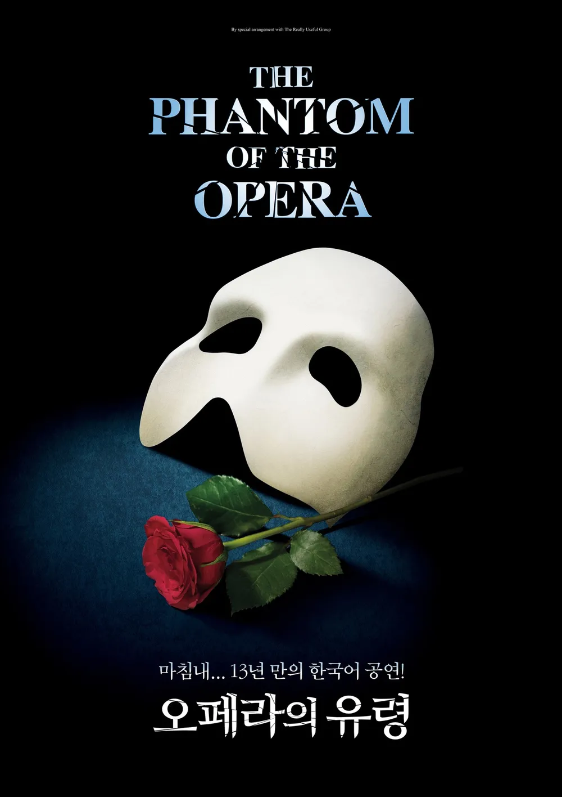
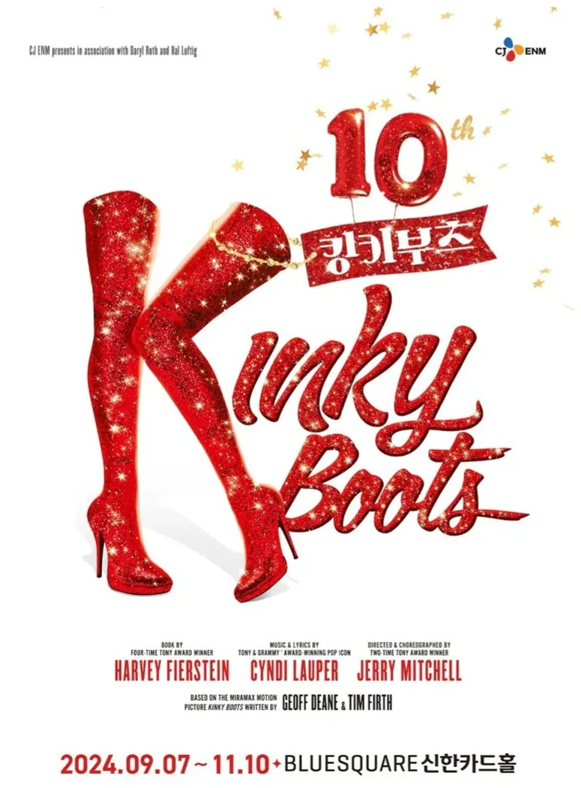
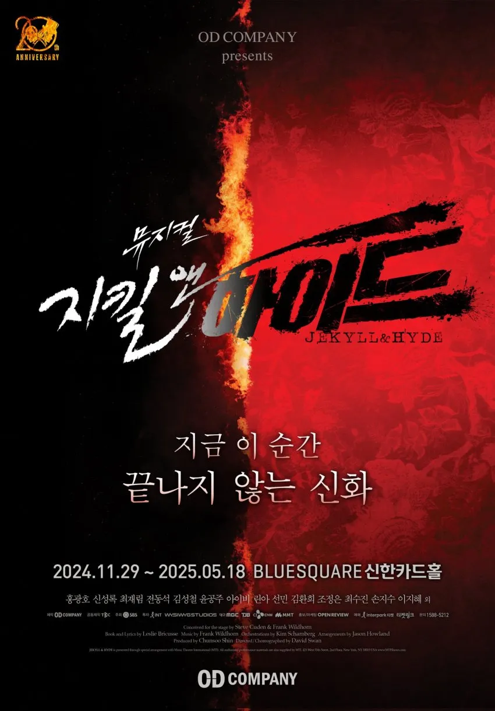

최재림
- 출생 | 1985년
- 국적 | 대한민국
- 학력 | 한국예술종합학교
- 데뷔 | 2009년 1월 9일 뮤지컬 렌트
좋아요
수상
2018년 제6회 대한민국 예술문화인상 뮤지컬 부문2019년 제3회 한국뮤지컬어워즈 남우주연상 마틸다
2022년 제6회 한국뮤지컬어워즈 남우조연상 시카고
2022년 제16회 DIMF 어워즈 올해의스타상 시카고
2024년 제18회 DIMF 어워즈 올해의스타상 오페라의 유령, 레미제라블
2024년 제15회 대중문화예술상 국무총리 표창
대표작

오페라의 유령
팬텀 역

킹키부츠
롤라 역

지킬 앤 하이드
지킬/하이드 역